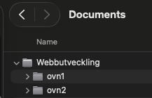

Modul 1
Kap 1.2 - Kom igång med VS Code och projektmappar
En bra arbetsmapp gör att webbsidan fungerar lokalt, i skolan och när den publiceras.
Mål
- Installera Visual Studio Code på din dator.
- Använda senaste versionen av Google Chrome för att kunna använda Inspektera i kursen.
- Installera tillägg som gör arbetet med HTML och CSS enklare.
- Skapa en tydlig projektmapp för en webbplats.
- Förstå varför filnamn, filändelser och relativa sökvägar spelar roll.
- Använda dokumentation, forum och AI på ett ansvarsfullt sätt.
VS Code
Visual Studio Code är en kodredigerare. I kursen använder du den för HTML, CSS och senare JavaScript. Installera programmet från code.visualstudio.com om det inte redan finns på datorn.
Du behöver också använda senaste versionen av Google Chrome i kursen, eftersom vi använder Chromes verktyg Inspektera när vi testar och felsöker webbsidor. Safari räcker inte för genomgångarna i kursen.
Praktiska tillägg är Live Server, W3C Web Validator, ett tydligt färgtema, ett ikontema och gärna
image preview. Emmet är inbyggt i VS Code och kan skapa grundkod snabbt. Om du skriver
! i en HTML-fil och trycker Tab skapas en enkel HTML-mall.
Installera VS Code
- Öppna en webbläsare och gå till code.visualstudio.com.
- Klicka på nedladdningsknappen. Sidan brukar känna av om du använder Windows, macOS eller Linux.
- Öppna den nedladdade filen och följ stegen för ditt operativsystem.
- Starta VS Code när installationen är klar.
- Windows: öppna den nedladdade
.exe-filen och följ installationsguiden. - macOS: öppna
.dmg-filen och dra Visual Studio Code till mappen Applications. - Linux: använd installationsfilen för din distribution, till exempel en
.deb-fil på Debian eller Ubuntu.
Om en knapp, text eller dialogruta ser lite annorlunda ut än i en film eller bild är det normalt. Program och webbsidor uppdateras ofta.
Installera tillägg i VS Code
Tillägg installeras från Extensions i vänsterspalten i VS Code. Ikonen ser ut som små block. Sök efter tilläggets namn och klicka på Install.
- Live Server: öppnar projektet i webbläsaren och laddar om sidan när du sparar.
- W3C Web Validator: hjälper dig att hitta HTML-fel och kontrollera att koden följer standarder.
- Color Highlight: visar färger direkt i CSS-koden.
- Image Preview: visar en liten förhandsvisning av bilder som används i koden.
- Color theme: ändrar färgtema i VS Code så att editorn blir lättare att läsa.
- Icon theme: ger olika filtyper tydligare ikoner i filträdet.
Starta gärna om VS Code efter att du installerat flera tillägg. Det behövs inte alltid, men det kan lösa små problem om ett tillägg inte syns direkt.
Kontrollera att allt fungerar
När VS Code och tilläggen är installerade kan du göra ett snabbt test.
- Skapa en ny projektmapp, till exempel
test-webb. - Öppna mappen i VS Code med File och Open Folder.
- Skapa filerna
index.htmlochstyles.css. - Öppna
index.html, skriv!och tryck på Tab. Då skapar Emmet en grundmall för HTML. - Lägg till text i
body, till exempel<p>Hello World!</p>. - Koppla CSS-filen i
headmed<link rel="stylesheet" href="styles.css">. - Skriv några CSS-regler i
styles.cssoch spara. - Starta Live Server och kontrollera att sidan öppnas i webbläsaren.
Vad betyder 127.0.0.1:5500?
När du startar Live Server kan webbläsaren visa en adress som http://127.0.0.1:5500/index.html.
127.0.0.1betyder din egen dator. Det är inte en sida ute på internet.5500är porten som Live Server använder för att visa projektet.index.htmlär filen som visas i webbläsaren.
Du kan ibland se localhost:5500 i stället. Det betyder i praktiken samma sak: webbläsaren tittar på en lokal webbserver på din dator.
body {
background-color: aqua;
}
p {
color: darkblue;
}Projektmapp
Skapa en mapp för varje webbplats. Lägg HTML-filen i mappen och skapa undermappar för sådant som bilder och CSS när projektet växer.
profil-sida/
index.html
styles.css
images/
profilbild.jpgSamla dina webbutvecklingsprojekt
Det är viktigt att samla alla webbutvecklingsprojekt i en gemensam mapp som är lätt att hitta på datorn. Då vet du alltid var dina HTML-, CSS- och bildfiler ligger, och det blir enklare att öppna rätt projekt i VS Code.
Skapa kursmappen Webbutveckling 1 på en plats där du lätt hittar den, till exempel i Dokument. I den samlar du uppgifternas projektmappar. Delkapitlens övningsmappar heter till exempel kap 1-2 och kap 1-3; större uppgifter kan ha namn som profil-sida och kontaktformular.

Filnamn
Använd små bokstäver, siffror och bindestreck i egna filnamn. Undvik å, ä, ö, mellanslag och specialtecken. I kursen använder du de angivna mappnamnen, till exempel Webbutveckling 1 och kap 1-2. Namn som min-profil.html och profilbild.jpg är lättare att
hantera än Min Profilbild 1.JPG.
En startsida bör heta index.html. Många webbservrar letar automatiskt efter just det
filnamnet.
Relativa sökvägar
En relativ sökväg utgår från filen du skriver i. Om styles.css ligger i samma mapp som
index.html skriver du:
<link rel="stylesheet" href="styles.css">Om bilden ligger i mappen images skriver du:
<img src="images/profilbild.jpg" alt="Porträttbild">Engelska och hjälp
Mycket kod, dokumentation och hjälpresurser är på engelska. Träna därför på engelska begrepp som element, attribute, browser, inspect, file, folder, error och warning.
Bra källor är MDN, W3Schools, WHATWG/W3C och Can I Use. Forum som Stack Overflow kan hjälpa dig se hur andra löst liknande problem. AI-verktyg kan ge förslag, men du behöver alltid testa, förstå och kontrollera koden själv.
Sammanfattning
- VS Code installeras från
code.visualstudio.com. - Extensions i VS Code används för att installera tillägg.
- Live Server och W3C Web Validator är bra tillägg i början av kursen.
- En webbplats börjar med en tydlig projektmapp.
index.htmlär standardnamnet för startsidan.- Relativa sökvägar kopplar ihop filer i projektet.
- Dokumentation och felmeddelanden är ofta på engelska.
- AI kan hjälpa, men du ansvarar för att koden fungerar.
Övningar
Så arbetar du: Besvara först kunskapsfrågorna utan att titta i kapitlet. Skriv med egna ord på papper eller i ett dokument och markera det du är osäker på. Öppna sedan svarsstödet, jämför med kapitlet och rätta. Svarsstödets nummer motsvarar frågans eller arbetsstegets nummer.
Övning 1: Förklara verktygen och projektmappen
- Vad använder du VS Code respektive webbläsaren till? Vad hjälper Live Server till med?
- Varför ska varje webbplats ha en egen projektmapp? Vad är en filändelse och vilket standardnamn brukar en startsida ha?
- Om HTML-filen och styles.css ligger i samma mapp, vilken relativ sökväg används? Om profilbild.jpg ligger i images, vilken sökväg används då?
- Vad betyder 127.0.0.1 i Live Server-adressen? Varför behöver du kontrollera kod även när du fått den från AI eller ett forum?
Svarsstöd – öppna efter ditt eget försök
- VS Code används för att skriva och redigera kod. Webbläsaren visar och kör sidan. Live Server visar projektet via en lokal webbserver och kan ladda om efter sparning.
- Mappen samlar filer som hör ihop. Filändelsen anger filtypen, exempelvis .html. Startsidan brukar heta index.html, även om övningarnas filer har egna namn.
- Sökvägarna är styles.css respektive images/profilbild.jpg. En relativ sökväg utgår från filen där den skrivs.
- 127.0.0.1 avser din egen dator. Kodförslag kan vara fel eller passa ett annat sammanhang; du behöver testa och förstå dem själv.
Förbered arbetet i VS Code
- Skapa mappen
kap 1-2i din mappWebbutveckling 1och öppna bara denna kapitelmapp i VS Code via Arkiv → Öppna mapp. - Skapa
ovn1-2.html. Använd kapitlets HTML-grundstruktur eller Emmet-mallen. I dessa övningar behövs ingen CSS eller JavaScript.
Övning 2: Öppna rätt mapp och testa arbetsflödet
- Öppna bara kapitelmappen i VS Code och skapa HTML-filen enligt förberedelserna. Skriv
!och tryck Tab för att skapa en mall med Emmet. Spara den skapade grundmallen. I denna övning tränar du verktygen; grundkodens delar går vi igenom i 1.3. - Skriv
<p>Jag testar Live Server.</p>i body. Spara och öppna filen med Live Server. Använd installationstegen i kapitlet om verktyget saknas. - Förutsäg vad som händer om du ändrar texten och sparar. Testa sedan och jämför. Anteckna vad adressens datoradress, port och filnamn betyder.
- Skapa undermappen images utan att lägga någon bild där ännu. Stäng projektmappen och öppna den igen. Kontrollera att filerna finns kvar och förklara hur du vet att du öppnat rätt projekt.
Svarsstöd – öppna efter ditt eget försök
- Utforskaren i VS Code ska visa kap 1-2 som projektmapp och ovn1-2.html inuti den. Emmet ska ge HTML-grundkod som du sparar innan du testar sidan.
- Texten ska synas i webbläsaren. Adressen ska visa en lokal server, exempelvis 127.0.0.1 eller localhost, och rätt HTML-fil.
- Den sparade textändringen ska visas; ladda om vid behov. Datoradressen pekar på din dator, porten på serverns port och filnamnet på den öppnade resursen.
- Samma HTML-fil och images-mapp ska finnas kvar. Kontrollera projektmappens namn och filnamnen i Utforskaren. Det är mappen du öppnar, inte bara en lös fil.
Återblick vid nästa lektion: Besvara två frågor du var osäker på igen utan att läsa dina gamla svar. Förklara ett viktigt begrepp ur minnet. Kontrollera och rätta efteråt.